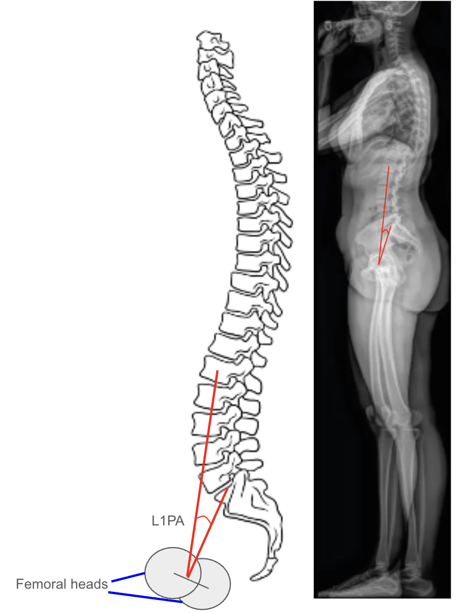

1) Description of Measurement
The L1 Pelvic Angle (L1PA) is a radiographic parameter used to evaluate global sagittal alignment by incorporating both spinal inclination and pelvic retroversion. It is defined as the angle formed between two lines: one connecting the center of the L1 vertebral body to the center of the femoral heads, and the other connecting the center of the S1 endplate to the center of the femoral heads.
The L1PA is a modification of the T1 Pelvic Angle (T1PA) and provides a more lumbar-focused representation of sagittal deformity, particularly useful when upper thoracic landmarks (like T1) are obscured or when analyzing lumbar-pelvic compensation. It correlates strongly with global sagittal imbalance, lumbar lordosis deficiency, and pelvic tilt, serving as a posture-independent measure of sagittal deformity severity.
2) Instructions to Measure
3) Normal vs. Pathologic Ranges
Key Point:
L1PA correlates with both T1PA and Sagittal Vertical Axis (SVA) but is less affected by variations in thoracic curvature or shoulder positioning, offering a stable alternative when upper thoracic landmarks are not visible.
4) Important References
Protopsaltis T, Schwab F, Bronsard N, et al; International Spine Study Group. TheT1 pelvic angle, a novel radiographic measure of global sagittal deformity, accounts for both spinal inclination and pelvic tilt and correlates with health-related quality of life. J Bone Joint Surg Am. 2014 Oct 1;96(19):1631-40. doi: 10.2106/JBJS.M.01459.
Lafage R, Schwab F, Challier V, et al; International Spine Study Group. Defining Spino-Pelvic Alignment Thresholds: Should Operative Goals in Adult Spinal Deformity Surgery Account for Age? Spine (Phila Pa 1976). 2016 Jan;41(1):62-8. doi: 10.1097/BRS.0000000000001171.
Wang Z, Wu B, Wang Z, et al. Comparison of Global Alignment and Proportion (GAP) Score and SRS-Schwab ASD Classification in the Analysis of Surgical Outcomes for Adult Spinal Deformity. Indian J Orthop. 2024 Apr 24;58(6):762-770. doi: 10.1007/s43465-024-01147-x.
Le Huec JC, Saddiki R, Franke J, et al. Equilibrium of the human body and the gravity line: the basics. Eur Spine J. 2011 Sep;20 Suppl 5(Suppl 5):558-63. doi: 10.1007/s00586-011-1939-7. Epub 2011 Aug 2.
Gao A, Wang Y, Yu M, et al. Association Between Radiographic Spinopelvic Parameters and Health-related Quality of Life in De Novo Degenerative Lumbar Scoliosis and Concomitant Lumbar Spinal Stenosis. Spine (Phila Pa 1976). 2020 Aug 15;45(16):E1013-E1019. doi: 10.1097/BRS.0000000000003471.
5) Other info....
The L1 Pelvic Angle reflects lumbar and lower thoracic contribution to overall sagittal balance, particularly useful in patients with thoracic fusions or limited upper thoracic visualization.
It is less sensitive to patient posture or knee flexion compared to the SVA, making it a more stable and reproducible measure of global alignment.
L1PA integrates the effects of spinal inclination and pelvic retroversion, two compensatory mechanisms that influence energy-efficient posture.
Strong correlations exist between L1PA, T1PA, and health-related quality-of-life metrics (ODI, SRS-22).
In adult spinal deformity surgery, alignment goals often target L1PA < 20° postoperatively to restore efficient standing posture.
When both T1 and L1 are visible, comparing T1PA and L1PA can reveal whether deformity is primarily thoracic-driven or lumbar-pelvic in origin.
EOS low-dose imaging provides superior measurement accuracy by minimizing projectional error and allowing 3D angle reconstruction.